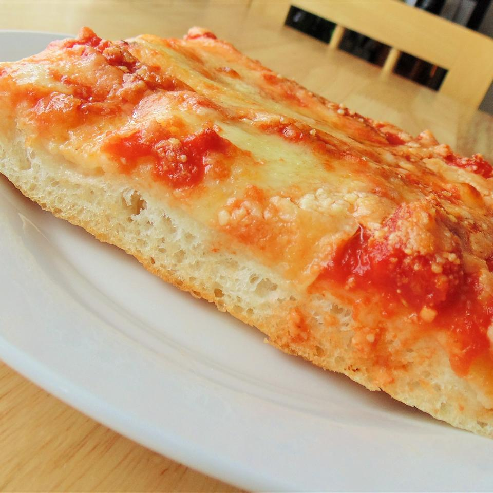

Description:
Now found exclusively at one well-known pizza garden in Gravesend, Brooklyn,
this style of pizza was once found in neighborhood bakeries. This pizza is deceivingly light, crisp, and slightly spicy.
Enjoy with a can of soda.
Ingredients:
Dough:
1 1/4 cups of warm water
1 teaspoon of active dry yeast
3 cups bread flour
1 1/2 teaspoon of fine salt
1/4 cup of olive oil
Sauce:
1 can plain crushed tomatoes
1 can pizza sauce
Cheese:
8 ounces low-moisture whole-milk mozzarella, very thinly sliced
1/4 cup grated Pecorino Romano cheese
Steps:
- Combine water and yeast in a small bowl. Let stand until yeast softens and begins to form a creamy foam, about 5 minutes.
- Combine flour and salt together in the bowl of a stand mixer fitted with a dough hook attachment. Pour in yeast mixture. Knead dough until smooth, about 7 minutes.
- Grease a large bowl lightly with olive oil. Form dough into a tight ball and lightly grease the top. Place in the bowl; cover loosely with plastic wrap. Let rise until doubled in volume, about 30 minutes.
- Mix crushed tomatoes and pizza sauce together in a bowl to make sauce.
- Grease a heavy-gauge rimmed 12x17-inch baking sheet generously with olive oil. Press dough into the bottom. Prick dough all over with a fork. Arrange mozzarella cheese slices over dough; cover with 1 cup sauce. Sprinkle Pecorino Romano cheese on top. Drizzle remaining olive oil over pizza.
- Let pizza rise in a warm area until puffy, about 1 hour.
- Preheat oven to 230 degrees C
- Bake pizza on the center rack of the preheated oven until edges are very dark brown but top is not burnt, 15 to 20 minutes. Cool in the pan for 5 minutes before slicing into squares.
Return to top
Return to the Home page